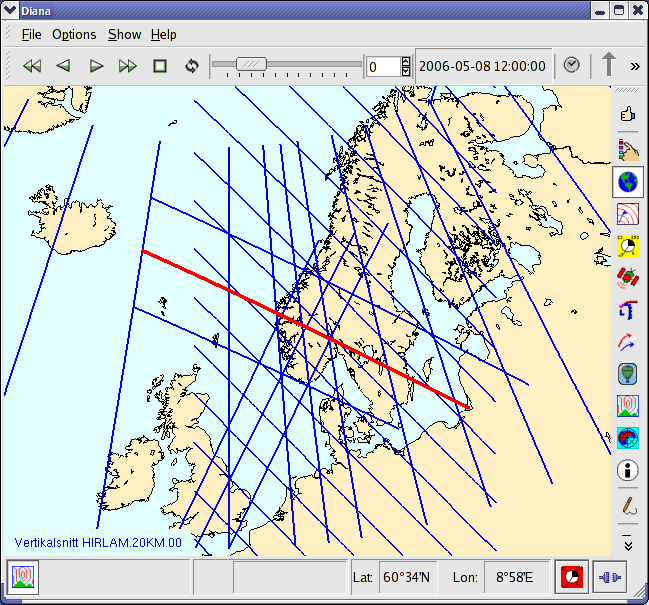
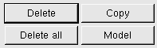
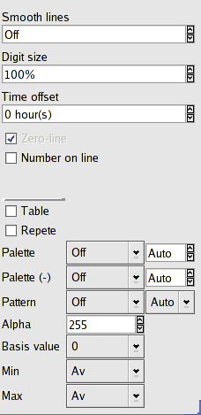

Vertical cross sections
Vertical cross sections
By selecting vertical cross sections a new window is displayed to
show these. No vertical cross sections appear until model and field have
been selected. When these have been selected in the
Model/field dialogue the positions of the vertical cross
sections will be displayed on the map in the main window.
Here, the vertical cross sections can be selected with a click or
automatically follow the mouse pointer. The time follows time changes in
the main window.

Vertical cross sections and time can be selected in three different ways:
- By selecting name and time in the lists.
- By clicking the arrows to the left and right of name/time the
next/previous vertical cross section/time is selected from the list.
- By using the Ctrl-arrow keys (up/down) for section and (right/left) for
time.

Vertical cross sections - toolbar

- Model/field - displays the dialogue for selecting model and field.
- Settings - displays a dialogue for settings independent of model/field.
- TimeGraph - changes between displaying vertical cross section
and time series for a (horizontal) point in the cross section. After
pushing the button select a point in the cross section with the left mouse
pointer.
- Print - starts the print dialogue
- Help - shows this text
Vertical cross section - Model/field
 |
-
Model - when model is selected, relevant fields are displayed.
-
Field - when a field is selected, the selection appears in
"Selected fields".
-
Selected field - displays what fields that have been selected.
-

Delete removes the marked field.
-
Delete all removes all of the selected fields.
-
Model changes model to the marked model under "models"; this
applies to all fields with the same model as the marked.
-
Copy copies the marked field. In this way several levels can
be displayed at once.
-

Up and down buttons are used to cycle through previous commands
(including earlier diana sessions). The commands are displayed under
"Selected fields".
-
OK (when the button is red) is used to use the selected command.
(Also checks that the fields still exist).
|
-
Up and down button changes the order of the fields.
-
R resets all attributes (colour, thickness, etc) of the selected field.
|
-
Colour - changes colour for selected field (only applies to fields with one colour).
-
Line width - changes line width for selected field (also applies to wind arrows and currents).
-
Line type - change line type for selected field (isolines).
-
Line interval - change line interval for selected field (does not apply to precipitation etc.).
-
Density - change density of wind/vectors for selected field.
-
Unit - change unit (length) of wind-arrow/current/vector for selected field.
-
More >> /<< Less is used to show/hide more options, se below.
|
Vertical cross section - Model/field, advanced part
This part of the dialogue is displayed when selecting "More >>",
and is hidden when selecting "<< Less"
|  |
-
Smooth lines - smoothes isolines by adding the selected amount of extra
points. This gives a nicer look when a small area is shown.
-
Digit size - size of numbers on the isolines (relative standard-size).
-
Base value applies to three-coloured contoured fields, where the value
of the middle value can be altered.
-
Time deviation is used to show fields with different times. The
deviation is set as hours relative to "main term" (negative=earlier,
positive=later.
-
Zero line can be removed from some fields (defined in the setup file).
-
Numbers on the isoline can be turned on/off.
|
Vertical cross section - settings